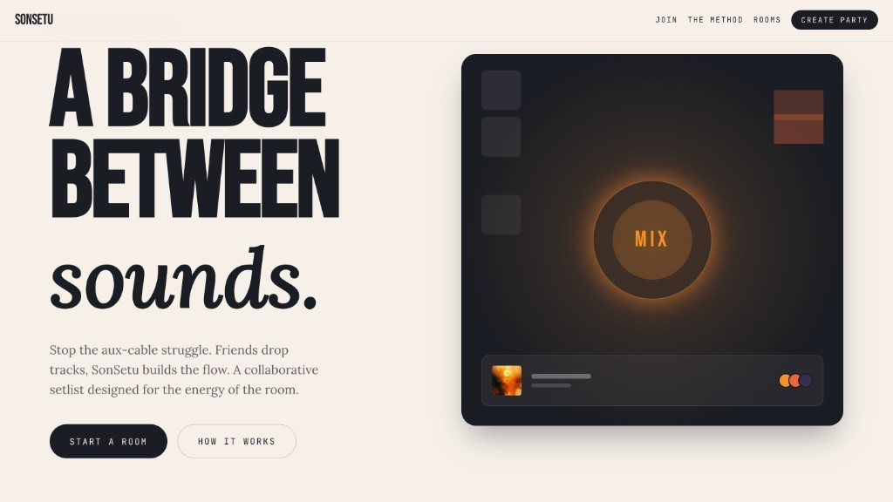
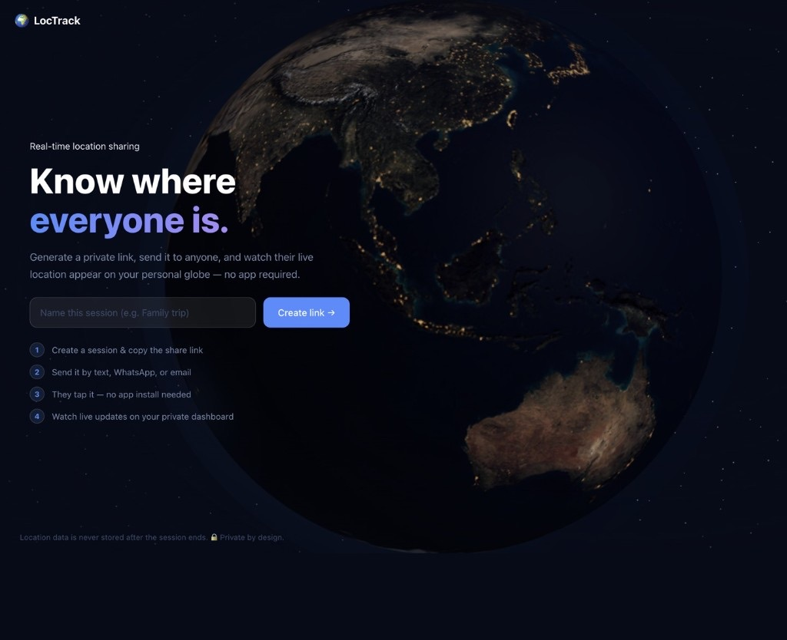
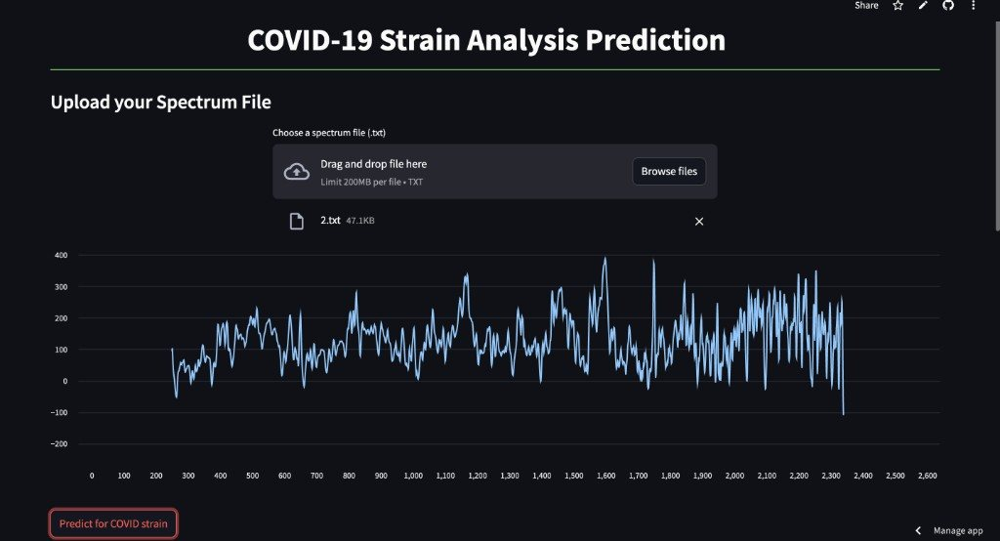
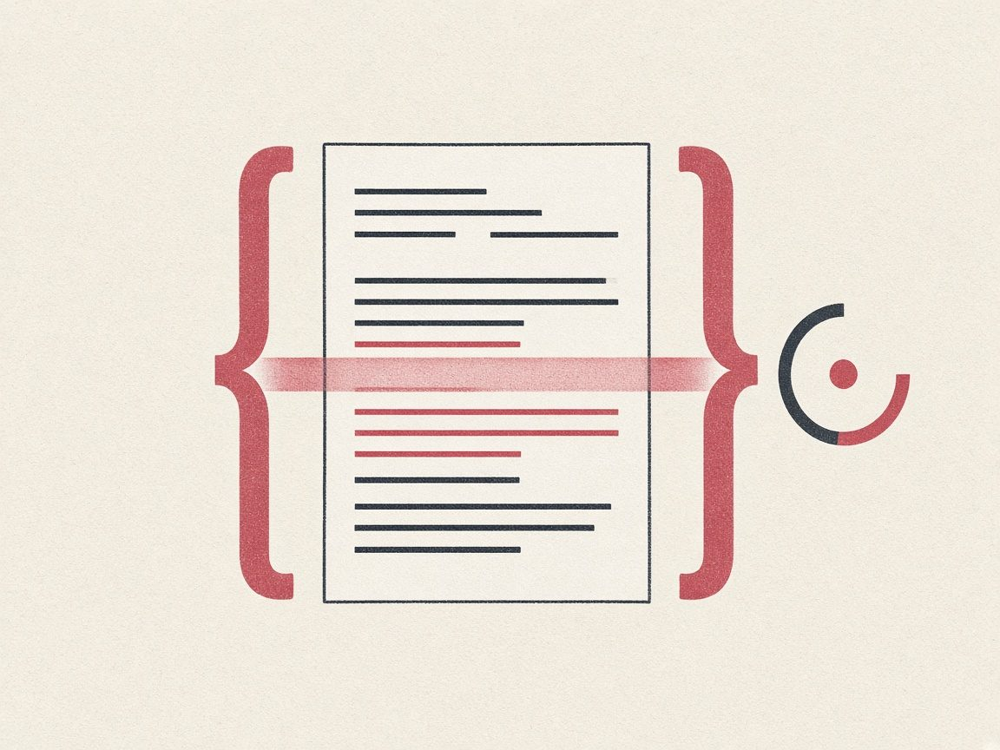
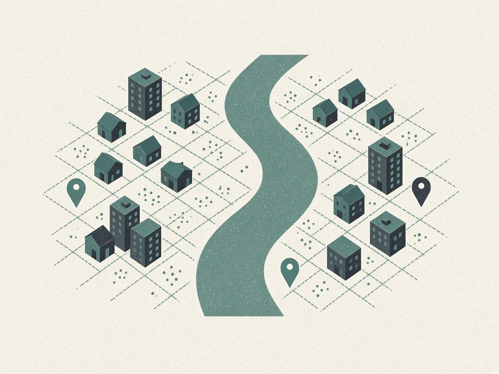
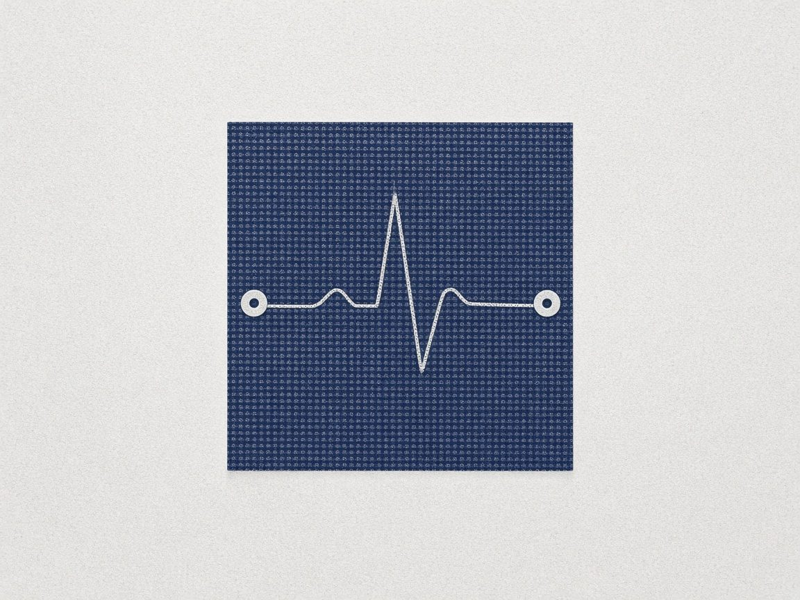
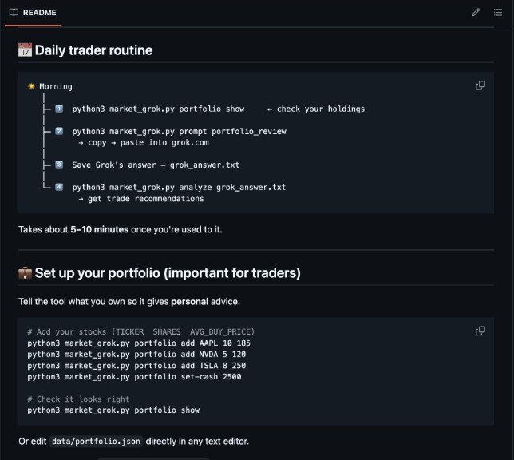

Food
KBBQ, then a nap
Shot on film. I’m always looking for the next good place to eat.
Hi, I’m
I study data science at Pitt and build machine-learning and LLM systems end to end. I care as much about how a model is measured as how it’s built.
Away from the laptop, I’m watching Barça, hunting down good Korean barbecue, chasing waterfalls or deep in something Star Wars. Music runs through all of it, which is how a playlist idea turned into SonSetu, and how this page got its mood pad.
Drag the dot to pick a mood. The colors, the type and the order of everything below will follow.
Each photo and project sits somewhere on the pad. The closest one to your dot comes first.
Food
Shot on film. I’m always looking for the next good place to eat.
Sci-fi
A lifelong Star Wars fan, finally standing next to a Mandalorian.
Outdoors
Trails and waterfalls are how I reset after a long week.
Cities
A quiet night with the skyline doing all the talking.
Home base
School, work and most of my side projects happen here.
Milestone
The ceremony was over, and so was my energy.
Work mode
Tie on, mirror check, ready.
Football
FC Barcelona, win or lose. Més que un club.
Music
My taste is all over the place. Sorting it by mood is what started SonSetu.
Pitt
Cap, gown and two thumbs up, with the Pitt Panther behind me.
Friends
Lower Manhattan from the water, with a friend and the right sunglasses.
Cities
Wanamaker Place at night, moving faster than the shutter.
Work mode
Drafting the Mood Reader model deck over coffee.

Project · live
Mood-aware playlists with about 100 users. This pad is a cousin of it.

Project
Live location through a private link, on a 3D globe. No app needed.
Project
Six LLM agents vote on market direction. About 56% out of sample.

Research
Raman spectra in, SARS-CoV-2 variant out. ACS Omega, 2025.

Project
Claude, prompted for strict JSON, with a client that forgives.

Capstone
Twin Cities listings, priced on a log scale. Cross-validated RMSE.

First paper
My first research summer at IIT Delhi. Materials Today: Proceedings, 2022.
For anyone hiring: what I built, what it measured, and what I learned when it broke.
Co-founded. Collaborative playlists powered by mood, live on the web.
When Spotify deprecated its audio-features API, I built a 4,000-song lyrics-and-audio dataset from scratch. A gradient-boosting pipeline predicts continuous valence and energy plus an eight-class vibe label, and the inference service runs in production on Render.
DistilRoBERTa · librosa · VADER · scikit-learn · Render
Open the live site~100
users on the live site
A multi-agent LLM research system for market direction.
Six agents on a hand-rolled Python orchestration layer, with no LangChain or LangGraph: planner and executor roles, explicit state passing and weighted voting over FinBERT news sentiment and technical indicators. An early backtest looked great until I traced it to a base-rate false positive, so I rebuilt the evaluation to keep that failure from coming back.
Python · FinBERT · Finnhub API · custom orchestration
Source on GitHub
~56%
directional accuracy, out of sample
Research at IIT Delhi, turned into a tool a lab could use.
I built the data pipeline for an ML-enhanced SERS spectroscopy study on variant detection, then shipped the trained classifier as a Streamlit app for researchers who don’t write code. I’m 4th of 9 authors on the resulting paper.
Python · scikit-learn · Streamlit
Source on GitHub2025
published in ACS Omega
A browser app that scores a document against a job description and rewrites it.
Claude is prompted for strictly parseable JSON, and the client handles the malformed responses that still slip through, so the interface never breaks on a bad generation.
React · Anthropic Claude API · structured output
JSON
strict schema, tolerant parser
Capstone project on the Minneapolis–Saint Paul market.
A log-transformed price target and a Random Forest regressor, tuned through feature engineering and a hyperparameter search.
scikit-learn · Random Forest · cross-validation
0.409
cross-validated RMSE, log price
Real-time location sharing through a private link, with no app to install.
Create a session, send the link by text, WhatsApp or email, and the other person’s live location appears on your personal 3D globe. Geofence alerts flag arrivals, and location data isn’t stored once the session ends.
React · Three.js · FastAPI
Source on GitHub0
apps the other person has to install
More builds are on GitHub. Or explore these projects as islands in Field, a 3D game Work in progress
Research labs, a live-events crew and an AI internship. Each stop taught me something I still use.
2022
My first lab. Most of research turned out to be careful, unglamorous data work, and I loved it anyway. The summer ended with my first paper, on textile-based ECG electrodes, in Materials Today: Proceedings.
2023
Collecting, cleaning and exploring data for a faculty-led project. This is where I got comfortable with messy, real-world data.
2024
I went back to build the data pipeline for a SERS spectroscopy study on SARS-CoV-2 variants, then wrapped the classifier in a Streamlit app so researchers who don’t code could use it. The work was published in ACS Omega.
2025
My first time shipping LLM features into real workflows, from prompts and output schemas to backend and interface. Most of the job was making the model’s output reliable enough to build on.
2025–26
Sound, video and live streams for four concerts and thirty to forty campus events. A live show doesn’t pause while you debug, so I learned to stay calm and fix things in real time.
2027
Finishing my degree with a minor in Applied Statistics, focused on statistical machine learning, regression, mathematical statistics and optimization.
Open to 2027 new-grad roles in ML, LLM systems and data science. U.S. citizen, based in Pittsburgh, happy to relocate.